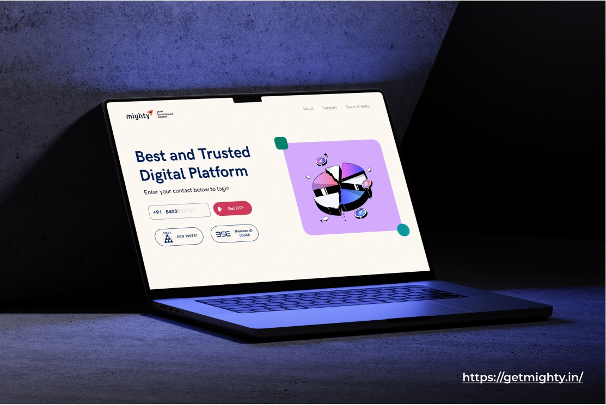
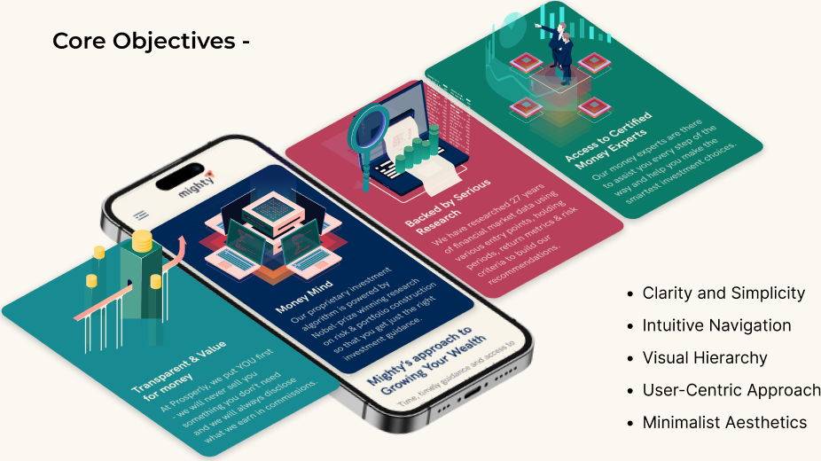
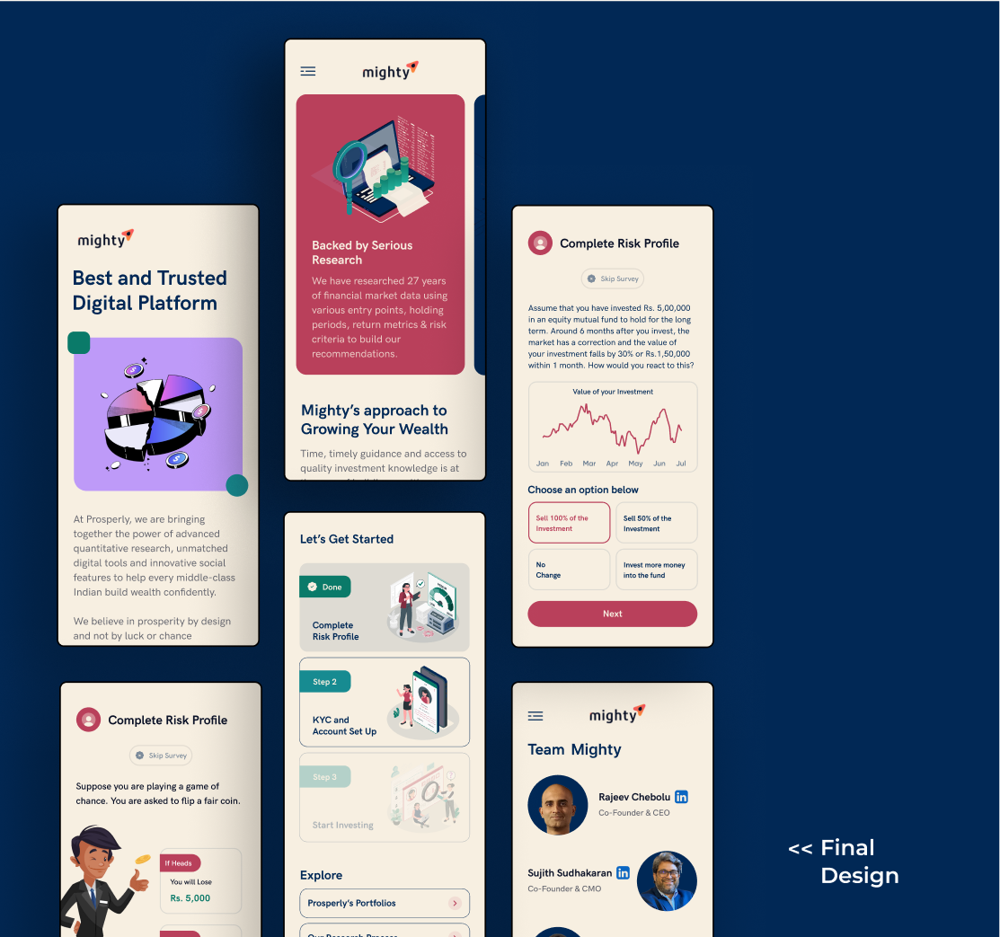
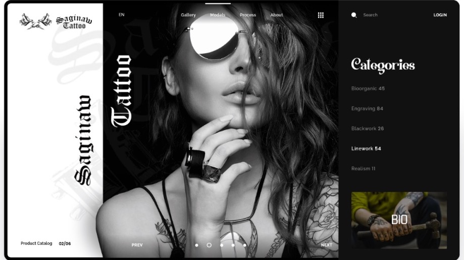

The challenge
Mighty guides first-time investors from India's middle class through mutual funds and risk. The brief was to enhance the user experience and design a scalable interface that engages that audience, across marketing collateral, dynamic social posts, logos, adaptable website templates and app elements.
My role
I constructed a new information architecture and a visual language that looks modern and lets a customer consume information on the page and decide quickly. Five objectives ran through every screen: clarity and simplicity, intuitive navigation, visual hierarchy, a user-centric approach, and minimalist aesthetics.

Decisions
Fewer choices per screen
Hick's law shaped the onboarding: each step asks one thing. The risk profile is a short scenario, "your investment falls 30 percent in a month, what do you do?", with four answers, not a questionnaire.
Large targets, familiar patterns
Fitts's law put the primary action at the bottom of every screen, large and reachable. Jakob's law kept the patterns familiar to anyone who has used a banking app, so the product feels safe on first use.
Color and whitespace as trust
A cream ground, navy type and one red for the primary action. Whitespace does the work that borders and boxes usually do. The team page puts the two founders' faces and LinkedIn profiles in the app, because a first-time investor wants to know who is behind the advice.

Outcome
The site is live at getmighty.in.
